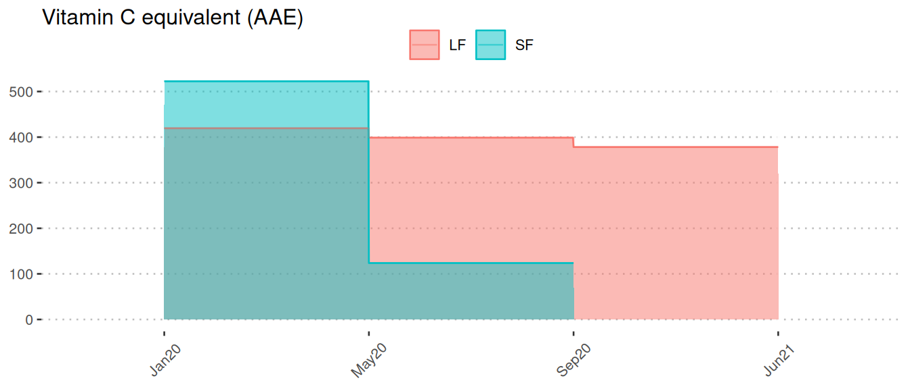
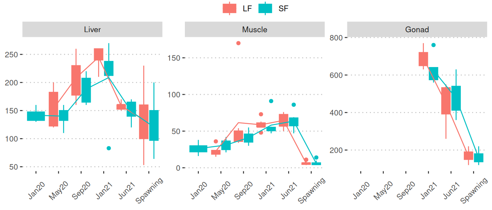
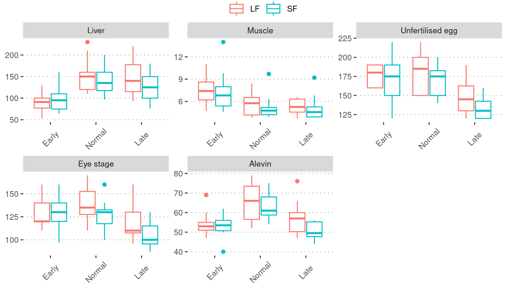

General stats (Vitamin C)
General statistics of vitamin C samples
About this page
Statistical analysis
In addition to general descriptive statistics, the page also exhibits the results from the following two ANOVA analyses.
Statistical analysis on the phase 1 + spawning samples

Statistical analysis on the phase 2 samples

Page contents
This page is organized into multiple sections with each section being dedicated to a single nutrient or metabolite. A section contains seven sub-sections, and here’s an overview of what you’ll find in each section:
Number of samples: A table displays the sample counts for various months and tissues.
Unit: The unit of measurement.
Descriptive statistics by tissue and month: A table presents basic statistics (mean, SD, min, and max) of samples grouped by tissue and month. “# NA” indicates the count of samples without valid values.
Concentration of the corresponding nutrient in feed: A plot illustrates the concentration of the corresponding nutrient/metabolite during the saltwater period (January 2020 - June 2021). It distinguishes between long-term feeding (LF, red) and short-term feeding (SF, blue).
Boxplots of the phase 1 + spawning samples: Boxplots depict nutrient/metabolite levels separated by LF (red) and SF (blue) among six sampling points for various tissues. Mean values of months are connected by lines. The five sampling points from broodstock are:
- Jan20: January 2020
- May20: May 2020
- Sep20: September 2020
- Jan21: January 2021
- Jun21: June 2021
Spawning samples consist of three sampling points:
- Nov21: November 2021 (early)
- Dec21: December 2021 (normal)
- Feb22: February 2022 (late)
Two-way ANOVA using the phase 1 + spawning samples: A table displays the results of a two-way ANOVA performed by:
- Dependent variable: level of nutrient/metabolite
- Independent variables: month, feed, month:feed interaction.
Note
Jan20 only has SF (blue) samples; ANOVA treats the three sampling points of spawning/offspring as one group.
Boxplots of the phase 2 samples (spawning/offspring): Boxplots show nutrient/metabolite levels separated by LF (red) and SF (blue) among the three final sampling points for various tissues. Mean values of months are connected by lines. The final sampling points are categorized as:
- Early: November 2021 (Nov21)
- Normal: December 2021 (Dec21)
- Late: February 2022 (Feb22)
Two-way ANOVA using the phase 2 samples (spawning/offspring): A table presents the results of a two-way ANOVA performed by:
- Dependent variable: value
- Independent variables: month, feed, month:feed interaction.
ANOVA is performed exclusively on the three sampling points of spawning/offspring.
Vitamin C
Vitamin C
1. Number of samples
2. Unit
mg/kg ww3. Descriptive statistics by tissue and month
4. Concentration of the corresponding nutrient in feed

5. Boxplots of the phase 1 + spawning samples

6. Two-way ANOVA using the phase 1 + spawning samples
7. Boxplots of the phase 2 samples (spawning/offspring)
